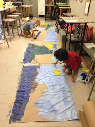
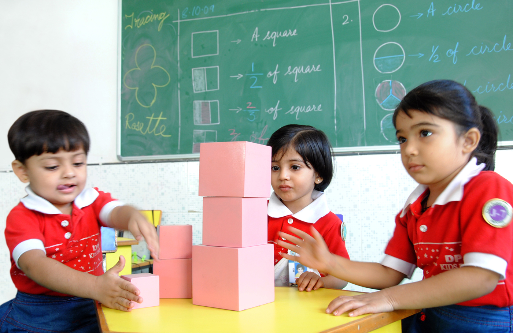

What makes us the Best
1 @ Creativity
Creativity is a process which results in the production of a new product.
Creativity is seeing or expressing new relationships. Creativity is not limited
to the objects of everyday use, but it is an instrument for increasing knowledge.
Creativity in life like thinking, working, playing or social
interaction.

2 @ Discipline
Discipline is the most important thing in everyone’s life.Without discipline one cannot live a happylife.It is the act of living life following some rules and regulations.Disciplineis everything which we do in the right way in right time.It leads us on the right path.
3 @ Freedom in learning

School is important because it teaches us about the world around us and prepares us with the tools we will need for future success in the job market. Outside of the classroom, students also learn valuable lessons at school, such as social skills, behavior, work ethic, working for people they don't like, and gaining a sense of personal achievement.